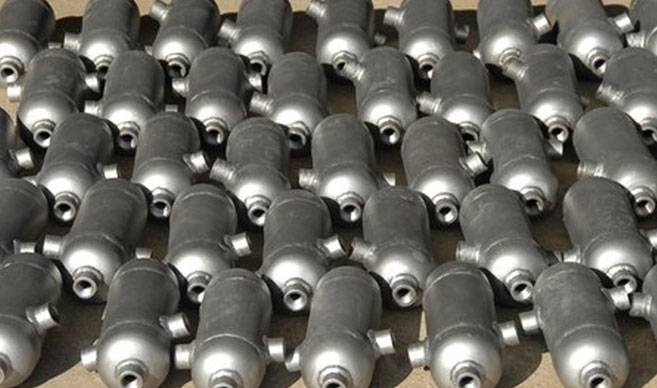

Renaissance Fittings and Pipes is a trusted condensate pot manufacturer, supplier, and exporter, offering high-quality condensate pots designed for efficient condensate collection, pressure balance, and protection of instrumentation systems.
Our condensate pots are engineered for use in demanding industrial environments where consistent performance and reliability are essential. In real-world industrial systems, a condensate pot is not just another component in the pipeline—it plays a direct role in maintaining system stability and ensuring accurate pressure measurement.
When steam or high-temperature media flows through pipelines, condensate formation is unavoidable. If this condensate is not properly managed, it can lead to inaccurate readings, pressure fluctuations, and long-term damage to sensitive instruments.
That is why buyers searching for a condensate pot supplier or condensate pot exporter are not simply comparing prices—they are evaluating manufacturing precision, material quality, and how well the product integrates into their system. We manufacture condensate pots with a clear understanding of these requirements, ensuring that each unit performs reliably once installed.

In steam and instrumentation systems, maintaining accurate pressure readings is essential for safe and efficient operation. However, steam lines naturally generate condensate due to temperature changes and heat loss. If this condensate reaches measuring instruments directly, it can distort readings and affect system performance. Condensate pots are installed to collect and retain this condensate before it enters the instrument line. By maintaining a stable liquid column, they create a barrier that protects instruments from direct exposure to steam while ensuring consistent pressure transmission. This is particularly important in differential pressure measurement systems, where even slight variations in fluid levels can lead to incorrect readings. A properly installed condensate pot ensures balanced conditions on both sides of the measuring instrument, improving overall accuracy.
From a practical standpoint, system stability is one of the main reasons why condensate pots are used. In complex industrial setups, pressure fluctuations and inconsistent flow conditions can lead to operational inefficiencies and maintenance issues. A well-designed condensate pot helps stabilize these conditions by controlling condensate accumulation and distribution. Over time, this contributes to smoother system operation, reduced wear on instrumentation, and fewer maintenance interruptions. For industries such as power generation, oil & gas, and chemical processing, this reliability is not optional—it is a requirement for continuous operation.
Condensate pots are typically available in standard configurations that suit most industrial applications. These include vertical and horizontal designs, depending on installation space and piping layout. Standard designs are preferred for their ease of installation and compatibility with common piping systems. However, in many cases, system layouts require specific dimensions or outlet arrangements that standard products cannot provide.
In large projects or retrofit installations, customization becomes essential. Buyers often require condensate pots with specific outlet spacing, connection types, or mounting arrangements to match existing systems. We manufacture custom condensate pots based on drawings or technical specifications, ensuring that the product fits seamlessly into the system. This reduces installation time and eliminates the need for on-site modifications.
For boiler and high-pressure steam systems, compliance with regulations such as IBR is required. These applications demand stricter manufacturing controls, certified materials, and inspection processes. For such requirements, we provide solutions like IBR Condensate Pot, designed to meet regulatory standards while maintaining performance and reliability in high-pressure environments.
| Parameter | Range | Options | Practical Benefit |
|---|---|---|---|
| Size | 2” to 12” | Custom sizes available | Suitable for various capacities |
| Pressure Rating | As required | High-pressure design | Reliable operation in demanding systems |
| End Connection | Threaded / Flanged / Welded | NPT, BSP, BSPT | Global installation compatibility |
| Orientation | Vertical / Horizontal | Custom configurations | Flexible installation |
| Drain & Vent | Available | Custom placement | Improved condensate control |
| Outlet Configuration | Single / Multiple | As per drawing | System-specific adaptation |
In actual installations, even small dimensional deviations can create major challenges. Misaligned outlets, incorrect threading, or improper spacing can delay installation and increase project costs. That is why manufacturing accuracy is critical. Each condensate pot is produced with attention to alignment, thread quality, and spacing to ensure proper fitment. This reduces on-site adjustments and helps buyers complete installations more efficiently.
Carbon steel is widely used for condensate pots in general industrial applications where operating conditions are controlled and corrosion risk is moderate. It offers strength and cost-effectiveness, making it suitable for many standard installations.
For applications involving moisture, chemicals, or outdoor exposure, stainless steel (SS304, SS316, SS316L) is preferred. These materials provide better corrosion resistance and longer service life, especially in harsh environments.
Material selection is not just a technical decision—it directly affects performance, maintenance, and lifecycle cost. Factors such as temperature, pressure, and exposure to corrosive elements must be considered when choosing the material. We assist buyers in selecting the most suitable material based on actual application conditions, ensuring that the condensate pot performs reliably over time.
| Standard | Description | Relevance |
|---|---|---|
| ASTM A106 | Carbon steel piping | Strength and durability |
| ASTM A312 | Stainless steel piping | Corrosion resistance |
| ASTM A182 | Forged components | High-pressure applications |
| ASME B31.3 | Process piping standard | Safety and design compliance |
| IBR | Boiler regulation | Required for steam systems |
Before dispatch, each condensate pot undergoes inspection to ensure it meets required specifications. This typically includes dimensional verification, thread inspection, and pressure testing where applicable. For project-based orders, additional documentation such as material test certificates and inspection reports can be provided. These documents help buyers verify quality and meet compliance requirements.
Condensate pots are widely used in steam systems to manage condensate and maintain pressure balance. In boiler applications, they play a critical role in protecting instrumentation and ensuring accurate readings.
In instrumentation setups, condensate pots help maintain stable pressure conditions for measuring devices. They are commonly used in differential pressure transmitters where accuracy is essential.
Industries such as oil & gas, petrochemical, and power generation rely heavily on condensate pots for maintaining system reliability. even minor inconsistencies can affect performance.
Beyond heavy industries, condensate pots are also used in manufacturing facilities where steam or compressed systems are part of daily operations. Their role in simplifying layout is vital.
Many buyers prefer to supply drawings or specifications to ensure compatibility with their systems. We manufacture condensate pots based on these inputs, ensuring accurate dimensions and proper integration. For integrated systems, buyers may also use components such as IBR Gate Valves Pot and IBR Globe Valves Pot to complete the installation.
As a condensate pot manufacturer and supplier, we support both small and large-scale requirements. Whether it is a few units for maintenance or bulk supply for a project, we ensure consistent quality and timely delivery.
As a condensate pot exporter, we supply products to global markets where requirements vary in terms of standards, connection types, and documentation. We ensure that each product is manufactured in accordance with these requirements, allowing smooth installation at the destination.
Proper packaging is essential to prevent damage during transit. Condensate pots are packed securely to ensure they reach the site in ready-to-install condition. Documentation such as material certificates and inspection reports can also be provided for international project compliance.
We manufacture condensate pots with a focus on real-world application rather than just theoretical specifications. This helps avoid common issues during installation.
We ensure that all technical details are clarified during the quotation stage, reducing the chances of errors or delays during production.
Whether the requirement is standard or custom, small or large, we maintain consistency in quality and delivery timelines.
Condensate pots are often used alongside piping and fittings to create a complete system. For better compatibility, buyers may also consider solutions like IBR Pipe Fittings Pot and IBR Stainless Steel Pipes. These components help ensure that the entire system works efficiently without compatibility issues.
To receive an accurate quotation, provide details such as size, material, pressure rating, and connection type. Even basic information is enough to initiate the process.
Once an inquiry is received, we provide a clear response that includes specification confirmation and delivery timelines. This helps buyers make informed decisions quickly.